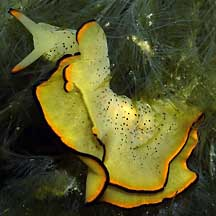
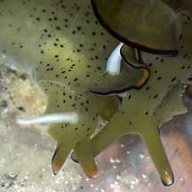

|
|
| sea slugs text index | photo index |
| Phylum Mollusca > Class Gastropoda > sea slugs > Order Sacoglossa |
| Elysia
slugs Elysia sp. Family Plakobranchidae updated Sep 12 Where seen? These slugs are commonly seen on many of our shores, especially during a 'bloom' of their seaweed food. They appear to be seasonal. Sometimes they are everywhere, at other times, none are to be seen. They were previously in Family Elysiidae. Features: They range from tiny ones 1cm long to larger ones 4cm long that resemble seaweeds. One pair of 'rolled up' tentacles, not solid tentacles like other slugs. A pair of 'wings' or flaps (called parapodia) surround the long narrow body. These are sometimes ruffled. Elysia slugs lack shells. What do they eat? They eat seaweeds. More details on how they feed in the fact sheet on the Sacoglossans in general. Stolen food factories: Some elysia slugs retain the algae's chloroplasts (the part that contains chlorophyll). These chloroplasts continue to carry out photosynthesis inside the slug and provide the slug with extra nutrients. It gets its bright green colour from the choloplasts that it retains from its seaweed food. The chloroplasts are distributed throughout the parapodia and in the body wall in fine branches of the gut. |
 Not green, perhaps not fed yet? Sentosa, Apr 04  Mating Elysia slugs. St. John's Island, May 05 |
| Elysia slugs on Singapore shores |
| Elysia species recorded for Singapore from Tan Siong Kiat and Henrietta P. M. Woo, 2010 Preliminary Checklist of The Molluscs of Singapore. ^K. R. Jensen. Sacoglossa (Mollusca: Gastropoda: Heterobranchia) from northern coasts of Singapore. *Cornelis (Kees) Swennen. Large Mangrove-dwelling Elysia species in Asia, with descriptions of two new species (Gastropoda: Opistobranchia: Sacoglossa) **from WORMS
|
Links
|
|
|